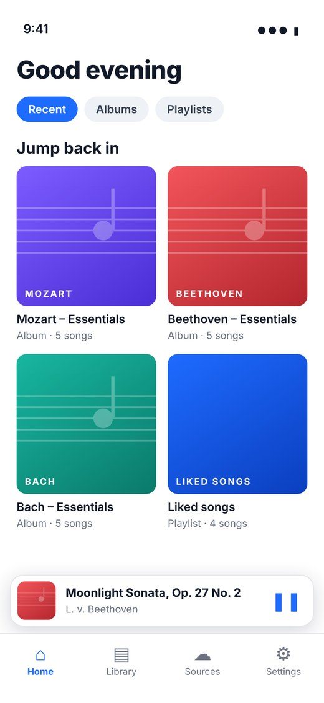
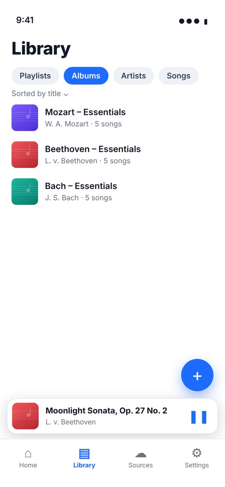
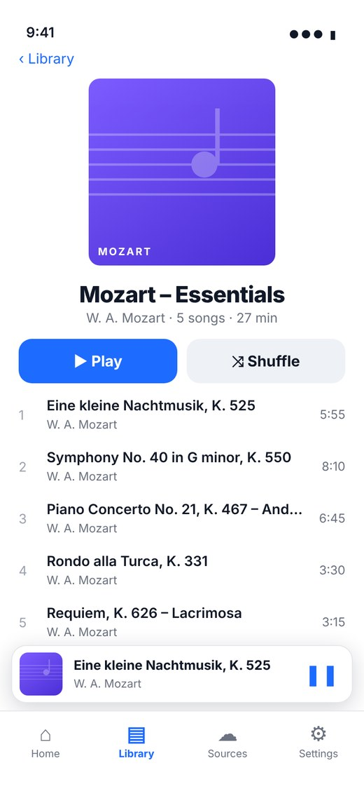
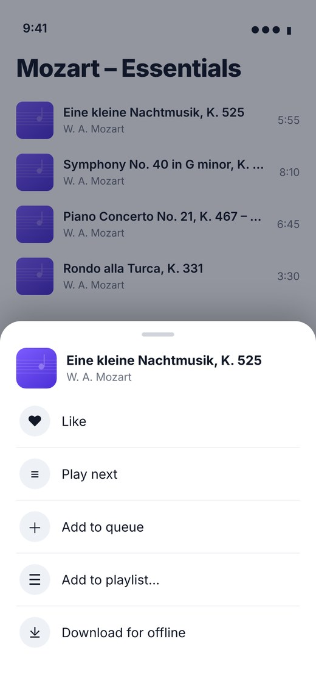
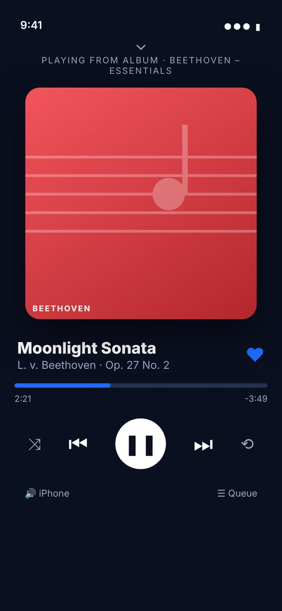
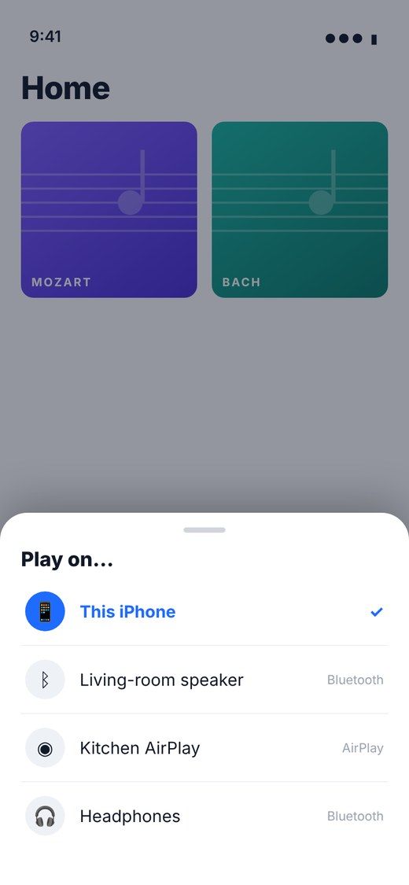

MyMusic user guide
Everything you need to start enjoying your music in a few minutes.
1. Getting started
You can be listening in about two minutes.
- Open MyMusic and go to the Sources tab.
- Choose where your music is: a folder on your iPhone, in iCloud Drive, or in Google Drive.
- Wait for the first scan. MyMusic reads titles, artists, albums and cover art. You can start playing while it finishes.
- Tap an album on Home or in Library and press Play.
The app has four tabs: Home (recent albums and playlists), Library, Sources and Settings. The mini-player at the bottom shows what is playing — tap it to open the full player.


2. Connect your music
MyMusic only reads your music. It never moves, edits or deletes your files.
On this iPhone
Choose On this iPhone and pick a folder in the Files app. MyMusic remembers the folder.
iCloud Drive
Pick the folder where you keep your music. Songs still in the cloud are fetched when you play them; a short “downloading” indicator may appear the first time.
Google Drive
Sign in with your Google account and pick a folder. MyMusic requests read-only access, so it can list and play your songs but cannot change them. Sign out any time in Settings.
Keep it up to date
Added songs? Tap Rescan sources. Only new or changed files are read, so rescans are quick.

3. Library and albums
Everything you connect appears in Library. Use the chips to switch between Playlists, Albums, Artists and Songs, and the sort label to order by title, artist or recently added. Open an album and press Play or Shuffle. The round + button creates a new playlist.

4. Example music: Mozart, Beethoven and Bach
Our screenshots use classical works by Mozart, Beethoven and Bach. The compositions are in the public domain, and we recommend recordings from Musopen, which offers recordings “for free, without copyright restrictions”. Download the recordings, place each composer in its own folder, add the parent folder as a source, and MyMusic builds these albums:
Mozart – Essentials
| 1. Eine kleine Nachtmusik, K. 525 | Serenade No. 13 |
| 2. Symphony No. 40 in G minor, K. 550 | I. Molto allegro |
| 3. Piano Concerto No. 21, K. 467 | II. Andante |
| 4. Rondo alla Turca, K. 331 | Piano Sonata No. 11 |
| 5. Requiem, K. 626 | Lacrimosa |
Beethoven – Essentials
| 1. Symphony No. 5, Op. 67 | I. Allegro con brio |
| 2. Piano Sonata No. 14 “Moonlight”, Op. 27 No. 2 | I. Adagio sostenuto |
| 3. Für Elise, WoO 59 | Bagatelle No. 25 |
| 4. Symphony No. 9, Op. 125 | IV. “Ode to Joy” |
| 5. Piano Concerto No. 5 “Emperor”, Op. 73 | II. Adagio |
Bach – Essentials
| 1. Brandenburg Concerto No. 3, BWV 1048 | I. Allegro |
| 2. Cello Suite No. 1, BWV 1007 | Prelude |
| 3. Toccata and Fugue in D minor, BWV 565 | Organ |
| 4. Air on the G String, BWV 1068 | Suite No. 3 |
| 5. Goldberg Variations, BWV 988 | Aria |
5. Playlists and likes
Create playlists to mix songs from any album or source — for example Focus & Study. Open Library ▸ Playlists, tap +, name it, and add songs from the song menu. Tap ♥ in the player to like a song; liked songs are gathered in Liked songs.
Press and hold a song to open its menu: Like, Play next, Add to queue, Add to playlist… and Download for offline. Swipe a song to the left to add it to the queue.


6. Player and queue
Tap the mini-player to open the full player: large cover art, a draggable progress bar, previous / play-pause / next, shuffle and repeat. Swipe down to close it. Queue shows what is playing and what comes next. MyMusic keeps playing in the background and from the lock screen and Control Center.


7. Speakers, offline, settings
In the player tap Play on… to choose your iPhone, headphones, a Bluetooth speaker or an AirPlay speaker. Pair Bluetooth devices once in iOS Settings. Bluetooth connects to one speaker at a time.
Songs you stream are kept in a cache for instant replay; set its size limit and clear it in Settings. For offline listening choose Download for offline on a song; you can limit downloads to Wi-Fi. You can also pick light, dark or system appearance.


8. Troubleshooting
My songs don’t appear
Check the files are MP3, M4A/AAC or FLAC, then tap Rescan sources. Other formats are skipped.
An iCloud song takes a moment to start
It may still be in the cloud; MyMusic downloads it when you play it. Make sure you are online.
Google Drive says my session expired
Open Settings, sign out and sign in again.
Wrong cover or album
MyMusic uses the tags inside your files. Fix them with a tag editor on your computer and rescan.
Sound stops when I walk away from my speaker
Bluetooth has limited range and the audio comes from your iPhone. Stay within range or switch output back to the iPhone.
Free up space
Use Settings ▸ Clear cache or remove offline downloads. Your original files are never touched.